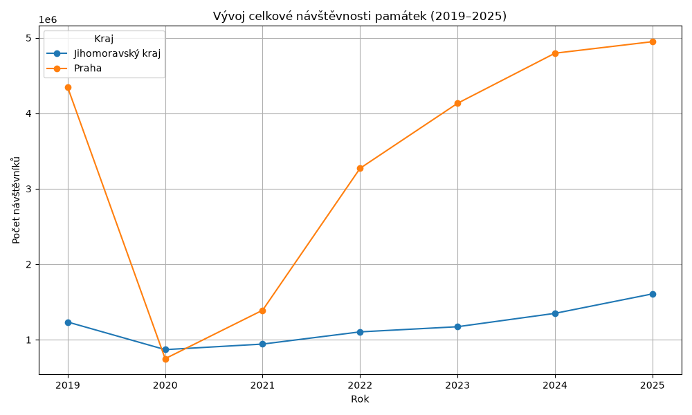
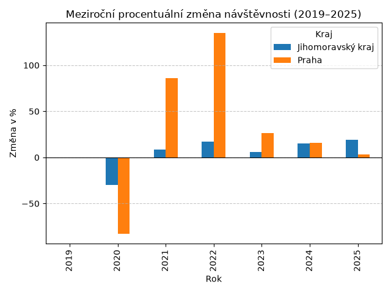
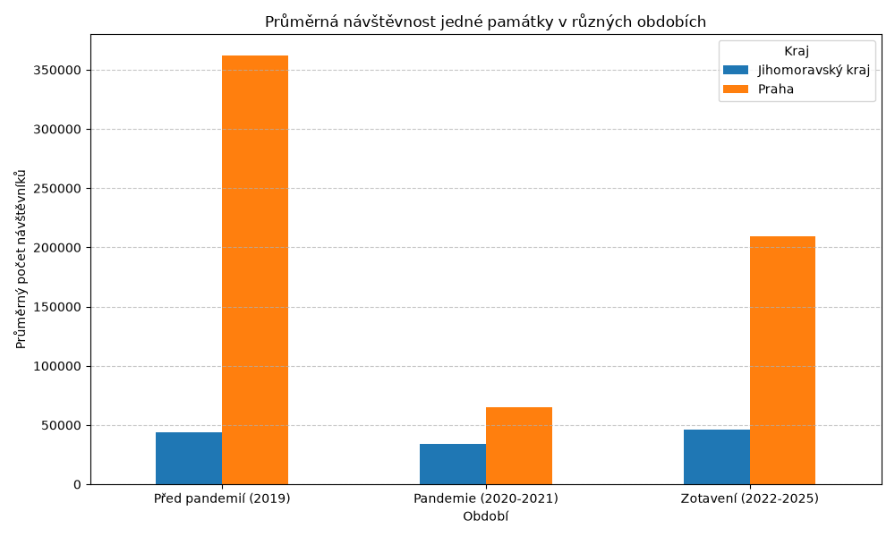
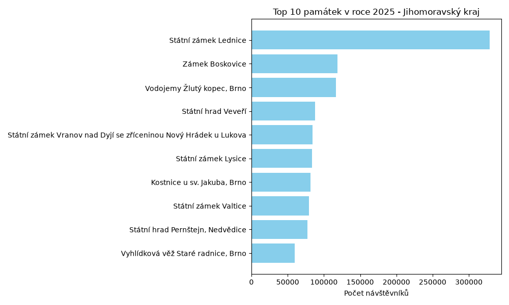
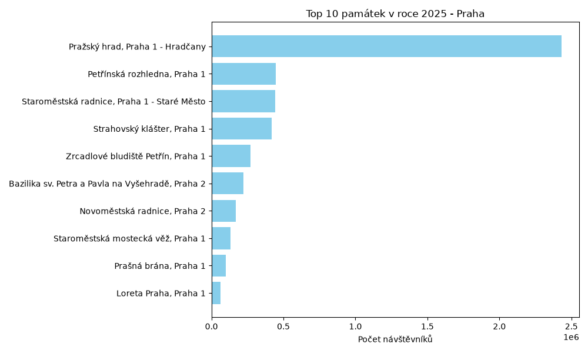
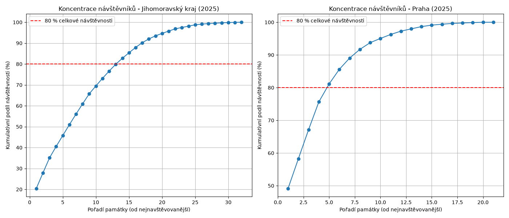

Turismus v datech: Jihomoravský kraj vs. Praha
Analýza agregovaného datasetu návštěvnosti památek v letech 2019–2025 ukazuje, jak pandemický šok ovlivnil cestovní ruch a jak silná je koncentrace turistů u nejznámějších objektů.
Absolutní propad a zotavení
Data jasně ilustrují vývoj celkové návštěvnosti památek. Spojnicový graf znázorňuje absolutní propad cestovního ruchu v roce 2020 a následný postupný proces zotavení v obou krajích.

Odlišná dynamika regionů
Kvantifikace šoku z pandemie ukazuje podstatné rozdíly. Metropolitní turismus v Praze, který je vysoce závislý na zahraničních hostech a letecké dopravě, zaznamenal podstatně tvrdší propad než Jihomoravský kraj. Ten se dokázal mnohem rychleji opřít o domácí turistiku a vykazoval dynamičtější návrat.

Srovnání klíčových období
Při porovnání tří hlavních fází trhu – předpandemické výkonnosti (2019), vlivu restrikcí (2020–2021) a aktuálního stavu zotavení (2022–2025) – je zřetelné, že ačkoliv trh roste, některé segmenty stále nedosáhly původních hodnot z roku 2019.

Nejnavštěvovanější objekty (2025)
Rozdílná struktura trhu je nejlépe vidět na žebříčcích TOP 10 památek. Zatímco Praha je silně centralizovaná a vykazuje absolutní dominanci Pražského hradu s výrazným odstupem ostatních, na jižní Moravě vede Státní zámek Lednice, ale trh je zde rozložen podstatně rovnoměrněji.


Paretovo pravidlo v praxi
Geografická a objektová koncentrace návštěvníků odhaluje zátěž turistických lokalit. Křivky kumulativního podílu dokazují, jak malý počet památek generuje drtivou většinu turistické návštěvnosti. V obou regionech obslouží většinu turistů nejvyšších 20 % zkoumaných objektů, přičemž v Praze je tento jev podstatně výraznější.
